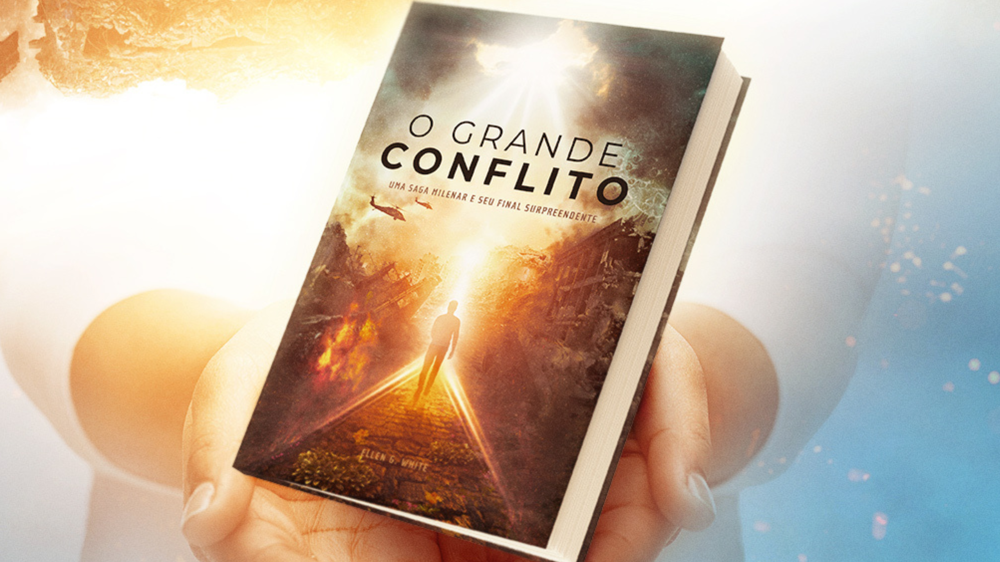

SOBRE MIM:
REINALDO DE LIMA CAMPOS
Olá! Meu nome é Reinaldo e sou apaixonado por tecnologia, filmes e livros que me fazem pensar. Acredito que o conhecimento e a criatividade são ferramentas poderosas para transformar o mundo. Gosto de aprender coisas novas e compartilhar o que descubro com outras pessoas. Sou um eterno aprendiz e sempre buscando novos desafios!
LIVRO FAVORITO:
O GRANDE CONFLITO
(Uma saga milenar e seu final surpreendente).
Baseado em fatos reais, este livro fortalece a fé poderosamente, revelando o conflito entre o bem e o mal, Cristo e Satanás, desde o seu início até os eventos finais, e todos os princípios por trás dos grandes movimentos religiosos e sociais. Liberta pelo conhecimento da verdade. "Somente aqueles que tem fortalecido a mente com as verdades da Bíblia poderão resistir no último grande conflito. Todos terão de passar pela prova decisiva. Obedecerei a Deus ou aos homens? O momento crítico se aproxima. Será que nossos pés estão formados na rocha da imutável Palavra do Senhor? Estamos preparados para permanecer firmes em defesa dos mandamentos de Deus e da fé em Jesus? (O Grande Conflito)". Leia o livro gratuitamente aqui.
FILME FAVORITO:
COMO TUDO COMEÇOU
(A história de como foi escrito o livro O GRANDE CONFLITO).
Baseado em fatos reais, o filme "COMO TUDO COMEÇOU", sempre quando o assisto, fico profundamente impactado pela fé dos que amam a volta de Jesus, pois o filme e o livro tem a missão de apontar para a breve volta de Cristo. A autora aponta para a Bíblia para que possamos ver o mundo com as lentes de Deus. Deus quer fortalecer a nossa fé no salvador, que não haverá mais morte e dor, e que todo o universo declarará que Deus é amor.
Satanás tentou contra a vida da autora do livro, Ellen G. White, para impedi-la de escrever este livro que hoje você tem a oportunidade de ler. Então aproveite e o leia gratuitamente. Também assista ao filme completo aqui.